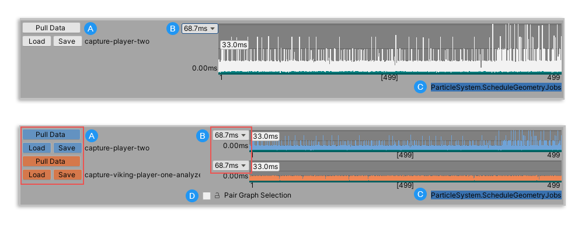
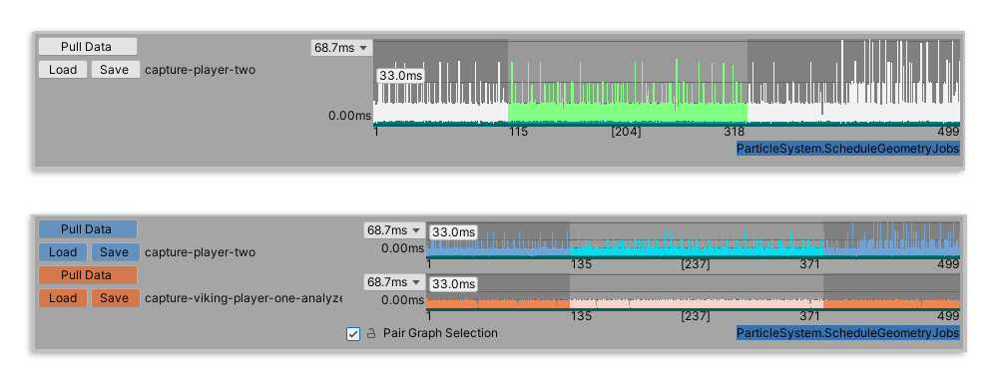

Frame Control pane¶
You can use the Frame Control pane in both the Single and Compare views to select a range of frames to reduce the working set. The Frame Control pane is laid out as follows:

The Frame Control in the Single view (top), and in the Compare view (bottom)
Control |
Function |
|---|---|
A: Pull Data / Load / Save |
Click the Pull Data button to pull any data that is loaded in the Profiler window. |
B: Frame control scale |
You can adjust the scale of the y-axis of the Frame Control graph by selecting this dropdown. By default, it scales to the maximum value of the data set. You can also choose from traditional frame boundaries. 16.67ms is equivalent to 60Hz/FPS, 33.33ms is equivalent to 30Hz/FPS, and 66.67ms is equivalent to 15Hz/FPS. |
C: Selected thread |
This displays the name of the marker which is selected in the Marker Details pane. When you select a thread from this list, the Profile Analyzer highlights its corresponding timings on the Frame Control graph in a green-blue color. |
D: Pair Graph Selection |
When you enable this checkbox, the Profile Analyzer reflects any changes you make in the range selection of a data set in both data sets. This is important to ensure you compare the exact same number of frames in both data sets and get an accurate comparison. |
Selecting a frame range¶
The Profile Analyzer uses all the frames in the data sets unless you select a sub-range. When you select a sub-range, it limits the analysis to just those frames which lets you focus on a specific frame or set of frames. To select a range of frames, click and drag on the Frame Control graph. To clear the selection, right click on the Frame Control graph and select Clear Selection.
To help visualize which frames are in the current selection, the start and end frame number, plus the frame count in square brackets appears on the x-axis of the graph.

The Frame Control in the Single view (top), with 204 frames selected, starting on frame 115 and ending on frame 318. The Compare view (bottom) has Pair Graph Selection enabled, with the same 237 frames selected on both graphs, starting on frame 135 and ending on frame 371.
Frame range controls¶
You can control the selection of data in both the Single and Compare views by using the following shortcuts, or by right-clicking and selecting an option from the context menu.
[!NOTE] In Compare view, make sure you enable the Pair Graph Selection checkbox to carry out the following commands on both graphs at the same time.
Shortcuts¶
Shortcut |
Function |
|---|---|
Shift+click |
Hold down the Shift key while clicking on the selection on the Frame Control graph to move the selection around freely. |
Left/Right arrow |
Move the selection forward or backwards by one frame. |
Ctrl + click |
Selects multiple parts of the data set. Hold down the Ctrl key (Command key on macOS) while making a selection and then click, and optionally drag, on different sections of the chart to select multiple parts of the data set. |
Equals (=) |
Extend the selection by one frame on each end of the selection. |
Alt+Equals |
Reduce the selection by one frame on each end of the selection. |
Shift+Equals |
Extend the selection by 10 frames on each end of the selection. |
Hyphen (-) |
Reduce the selection by one frame on each end of the selection. |
Alt+Hyphen |
Extend the selection by one frame on each end of the selection. |
Shift+Hyphen |
Reduce the selection by 10 frames on each end of the selection. |
Comma (,) |
Extend the start of the selection by one frame. |
Alt+Comma |
Reduce the start of the selection by one frame. |
Shift+Comma |
Extend the start of the selection by 10 frames. |
Period (.) |
Extend the end of the selection by one frame. |
Alt+Period |
Reduce the end of the selection by one frame. |
Shift+Period |
Extend the end of the selection by 10 frames. |
1 |
In Compare view, with Pair Graph Selection disabled, use the 1 or 2 key on your keyboard to switch between frames. 1 selects the top data, and 2 selects the bottom data. |